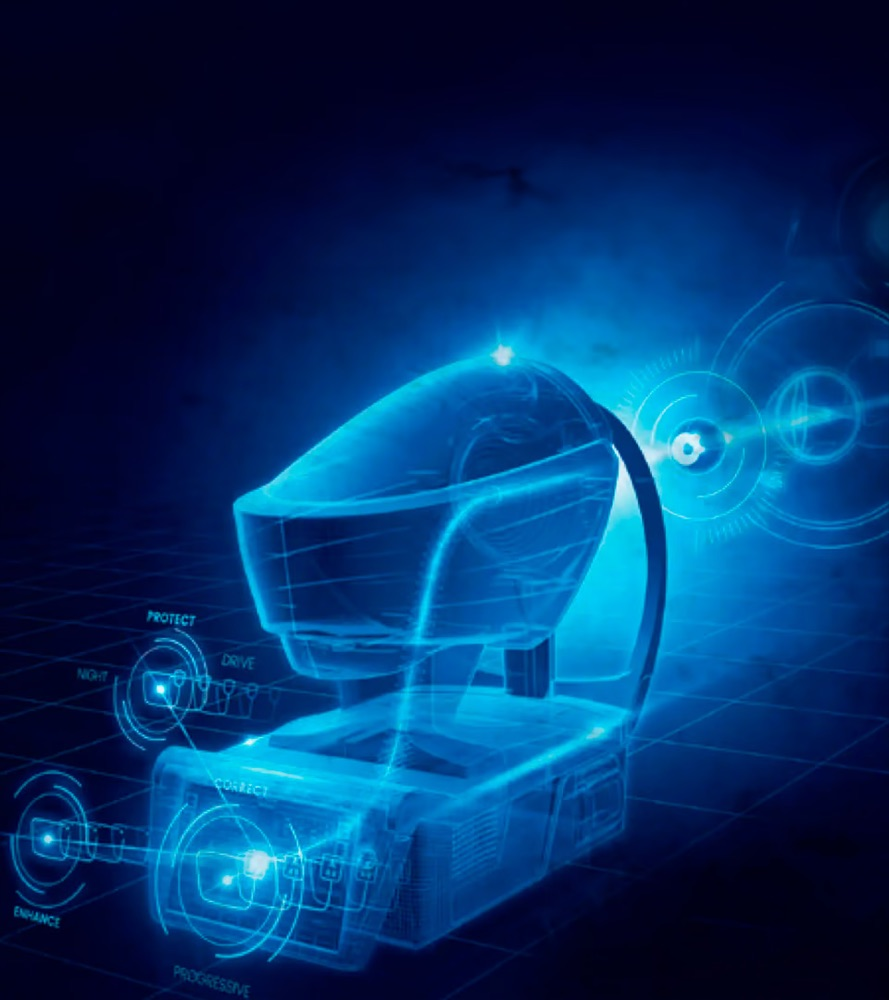
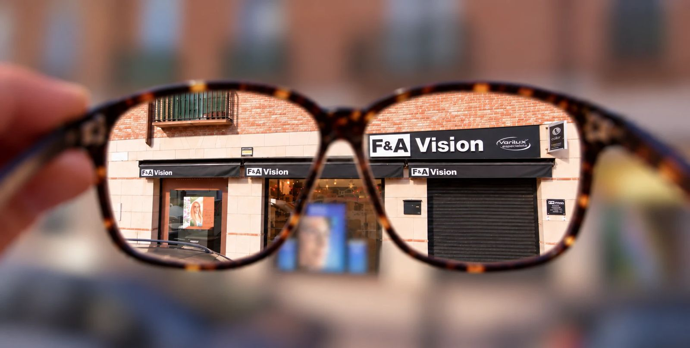
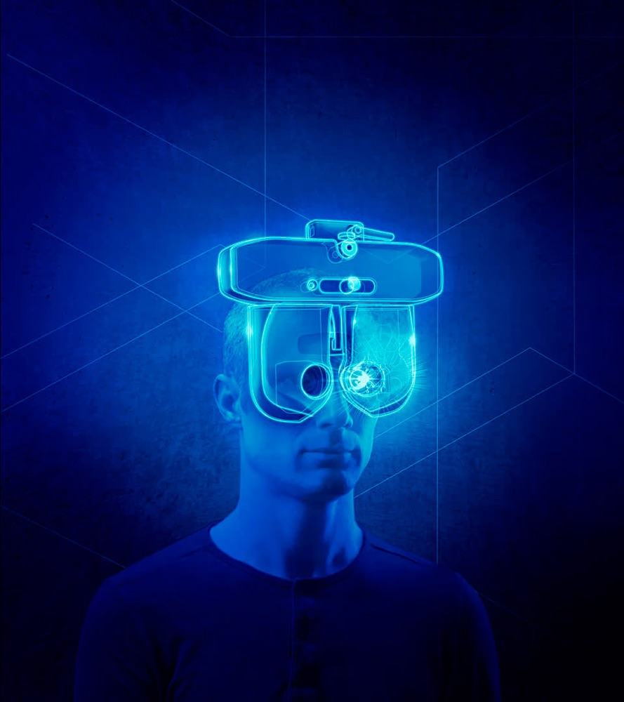
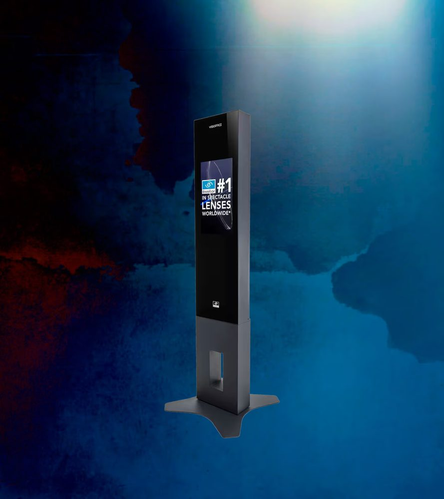
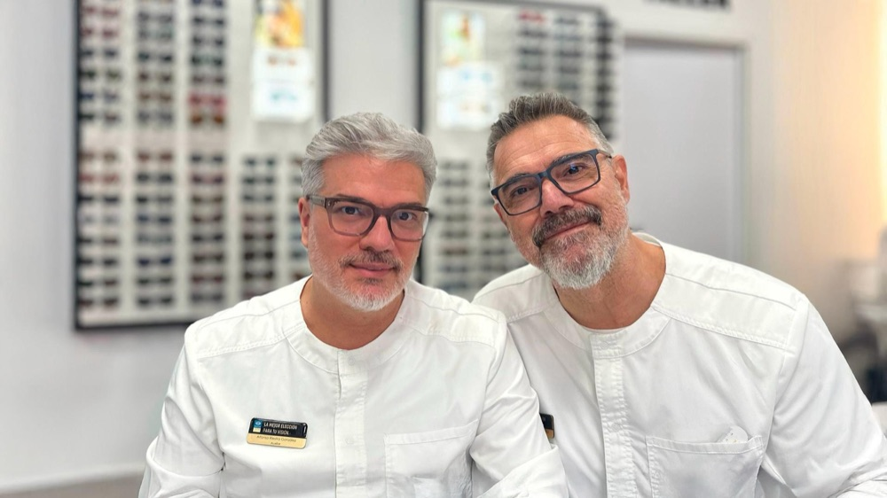

Aberrómetro WAM800
7 medidas en 90 segundos
Un análisis preciso de tu fisiología ocular, rápido y sin molestias. Nos ayuda en:
Revisión visual con equipos de última generación, graduación al 0,01 y gafas de las mejores marcas en San Martín de la Vega.

Ver todas las reseñas → Fragmentos literales de reseñas de 5 estrellas en Google.
Hemos invertido en los equipos más avanzados para medir tu vista con precisión, sin molestias y en menos tiempo. Menos fatiga para ti, más acierto en tu graduación.

Un análisis preciso de tu fisiología ocular, rápido y sin molestias. Nos ayuda en:

Su lente líquida permite pequeños ajustes de potencia durante el examen: más sensibilidad, menos tiempo y menos fatiga visual. Y con lentes Varilux, talladas con la misma precisión.

Mide la posición exacta del centro de rotación de tu ojo para centrar la lente donde toca: visión al instante y sin esfuerzo. También con lentes tintadas.
Arriba lo has probado en pequeño: afinar hasta verlo nítido. En la revisión lo hacemos hasta la centésima de dioptría.
Pedir mi revisiónVariedad de estilos y marcas. Pruébatelas con calma y te aconsejamos la montura y la lente que mejor te van.
Ven a probártelasMonturas para ver bien y verte bien, con lentes ajustadas a tu graduación exacta.
Ver monturas en tiendaSomos especialistas en progresivos y trabajamos con Varilux, con medidas en 3D para que te adaptes antes.
Consultar progresivosUrbanas, deportivas o polarizadas para conducir. También graduadas.
Buscar mis gafas de solRevisiones para los peques y control de la miopía con el WAM800. Ideal antes de la vuelta al cole.
Revisar a mi hijo/aAlgunas de las marcas que enseñamos en nuestro Instagram. Pregúntanos por el resto.

Tenemos un solo objetivo: tu satisfacción. Disponer del mejor equipo es fundamental, y no hablamos solo de máquinas: contamos con óptico-optometrista y, lo más importante, con cariño por lo que hacemos.
Nos esforzamos para que veas mejor y más nítido. Y si algo no va bien, te buscamos una solución.
«Llevo toda mi vida usando gafas y lentes de contactos… y no he conocido mejor sitio que este. Tanto Fernando como Alfonso son dos pedazos de profesionales.»Ruth G., reseña de Google
Revisión, gafas nuevas, progresivos o gafas de sol. Elige el día y si te viene mejor por la mañana o por la tarde.
Te respondemos con la hora exacta. Sin registros ni formularios largos.
Siete medidas en 90 segundos, tu graduación afinada y todo el tiempo que necesites para elegir montura.
Tres preguntas rápidas y tu cita sale ya escrita por WhatsApp, con un código propio. Te confirmamos la hora exacta.
Faltan datos de la óptica para completar esta sección.
En San Martín de la Vega, para que no tengas que salir del pueblo para ver bien.
| Lunes a viernes | 10:00–14:00 · 17:00–20:00 |
|---|---|
| Sábado | 10:00–14:00 |
| Domingo | Cerrado |
No. Es nuestro lema: mejor no significa más caro. Los equipos nos permiten acertar antes con tu graduación, y eso es lo que pagas: ver bien.
El aberrómetro WAM800 toma siete medidas de tu ojo en 90 segundos y sin molestias. Después afinamos tu graduación con el foróptero Vision-R 800, que reduce el tiempo de examen y la fatiga visual.
Sí, somos especialistas en progresivos. Trabajamos con lentes Varilux y tomamos medidas 3D con el Visioffice X para centrarlas con precisión.
Variedad de estilos y marcas: en nuestro Instagram verás Ray-Ban, Carrera, Vogue Eyewear, Arnette, Polaroid, rh+ o Ferrari, entre otras.
Sí. Además, el WAM800 nos ayuda en el control de la miopía, muy útil en edad escolar.
Sí: desde el botón «Pedir cita» te preparamos el mensaje, o escríbenos al 699 06 24 58. También puedes llamar al 918 65 93 63.
Google no permite mostrar aquí su lista completa de reseñas; puedes leerlas todas en su ficha.
Desliza hasta ver las letras nítidas. Es lo que hacemos en la revisión, pero afinando hasta la centésima de dioptría.
Desliza para enfocar